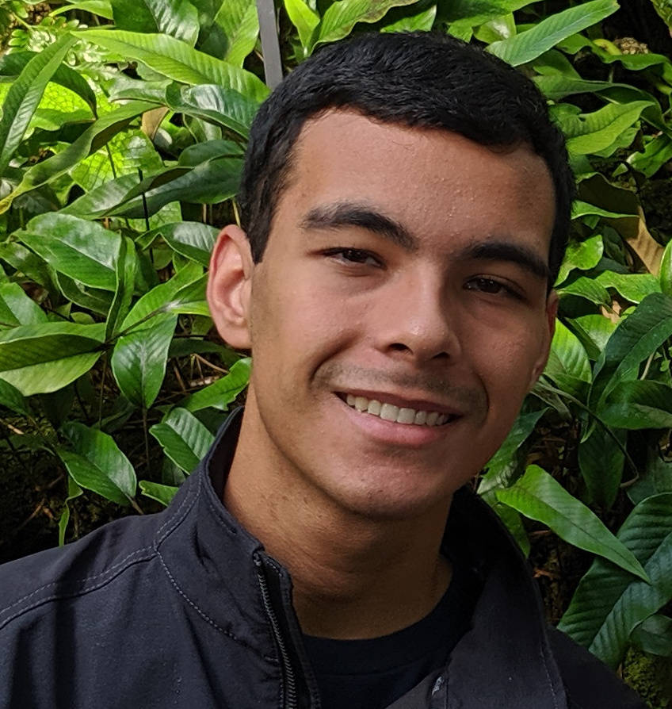

|  |
Gustavo SilveraHello there Welcome to my website, I'm an undergraduate in the CMU School of Computer Science planning on majoring in Artificial Intelligence with an additional major in Computer Science (class of 2023). I enjoy working on code projects, video games, and robots; and playing tennis on the side. |
|
In Fall 2020, I completed my first fully remote semester while continuing my
summer research with CMU's HARP Lab
. In this semester we finished
SocNavBench and began working on a new project for assistive driving with
light-curtains building on the Carla Driving
Simulator. |
|
|
During the Summer of 2020, I worked as a remote research lab assistant at
CMU Human-Robotics-Institute's HARP
Lab (Humans And Robot Partners) and TBD Lab (Transportation, Bots, and Disability), where I'm working under
graduate students and mentors to build a Robotics algorithm simulator,
SocNavBench,
that benchmarks social navigation algorithms for a robot traversing through a human populated
environment. |
|
|
In the Spring of 2020, I completed my second Freshman term with some notable classes being 07-180: Concepts in Artificial Intelligence, 15-251: Great Theoretical Ideas in Computing, and 15-150: Principles of Functional Programming. This was my second term participating in CMU's Game Creation Society, but it was difficult to continue due to the global events occuring. |
|
|
In Fall 2019, I finished my first Freshman term at the School of Computer Science. I completed classes such as 15-122: Principles of Imperative Computation, 15-151: Mathematical Foundations for Computer Science, and 21-241: Matrices and Linear Transformations. This was my first term participating in CMU's Game Creation Society, and I completed my first Unity game (Game Bytes: Sporshmallow) with a great team. |
|
|
Before my Freshman Year at CMU, I was a student at Dublin High School in the CS Academy. I spent most of my time participating with my robotics teams, working on personal projects, and playing on the Varsity tennis team. |
Have a great day!